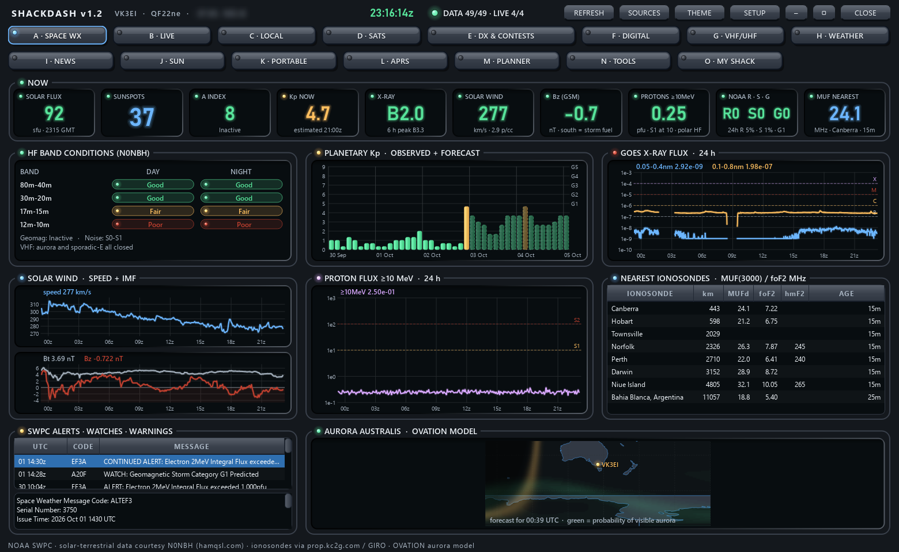

SHACKDASH
A free Windows dashboard that puts the internet data a radio amateur wants into one window: space weather, propagation, DX spots, satellites, contests, weather, portable activators, APRS and more.

Fifteen tabs
Pick a tab to see it. These are real screenshots with live data.
What it does
Every source is free. Everything is worked out from your own callsign and grid locator.
Propagation at a glance
SFI, Kp, X-ray, solar wind and Bz, N0NBH band conditions, nearest ionosonde MUF, aurora and D-RAP absorption.
Who hears me
RBN, PSKReporter and WSPR reports of your own signal on a map, alongside a filtered DX cluster.
Satellites
Passes for about 95 amateur satellites, a live tracker with Doppler-corrected frequencies and a sky plot.
Portable and contests
POTA, WWFF and ParksnPeaks activators merged, contests this week and announced DXpeditions.
Antenna weather
Local conditions, a wind alert threshold, thunderstorm risk and (in Australia) BoM radar and warnings.
Your own shack
An optional tab that watches your Pi-Star/WPSD hotspots and other gear on your home network.
Get started
- Download
ShackDash-1.4-windows.zipfrom the latest release and unzip it anywhere. - Run
ShackDash.exe. The program is not code-signed, so Windows may say "Windows protected your PC". Click More info, then Run anyway. - SETUP opens by itself on the first start. Enter your callsign and 6-character grid locator. Distances, beam headings, weather and passes all come from it.
- Read the ShackDash User Guide.pdf in the zip for a walk through every tab.
Prefer Python? Run it from source: pip install -r requirements.txt then python main.py.
Privacy
ShackDash has no server, no telemetry and no analytics. The author receives nothing from your copy.
Direct connections only
Your PC fetches data straight from each provider. Some requests include your callsign (receive-only logins to DX clusters, RBN and APRS-IS; PSKReporter lookups) or your locator (weather, passes).
Stays on your PC
Settings and the data cache live in %APPDATA%\ShackDash. The My Shack tab only talks to devices you add on your own network.
Never transmits
ShackDash does not key any radio. APRS is receive-only.
Disclaimer
Please read this before using ShackDash. The full text is in DISCLAIMER.md.
No warranty
ShackDash is a free hobby project provided "as is", without warranty of any kind, express or implied, under the MIT License. You use it entirely at your own risk.
Limitation of liability
To the maximum extent permitted by law, the author is not liable for any loss or damage of any kind arising from the use of, or inability to use, ShackDash or its hotspot add-on, including damage to equipment, data loss, injury or licence infringements.
Not for safety-of-life use
Never rely on ShackDash to decide whether it is safe to climb a tower, work on an antenna, operate portable or travel. Weather, warnings, radar, space-weather and propagation data may be late, cached or wrong. Always check your official weather and emergency services.
Not legal advice
Band plans, licence privileges and frequency checks are a convenience and may be out of date. You are solely responsible for operating within your own licence conditions and your country's regulations.
Third-party data
Data comes from independent providers such as NOAA, NASA, the Bureau of Meteorology, Open-Meteo, CelesTrak, PSKReporter, RBN, POTA, WWFF and others. ShackDash is not affiliated with or endorsed by any of them. Their data, names and trademarks belong to their owners and are subject to their own terms, and any source may change or stop without notice.
Hotspot add-on
The optional installer changes files on your Pi-Star/WPSD hotspot. Back it up first and only use it on devices you own or administer.